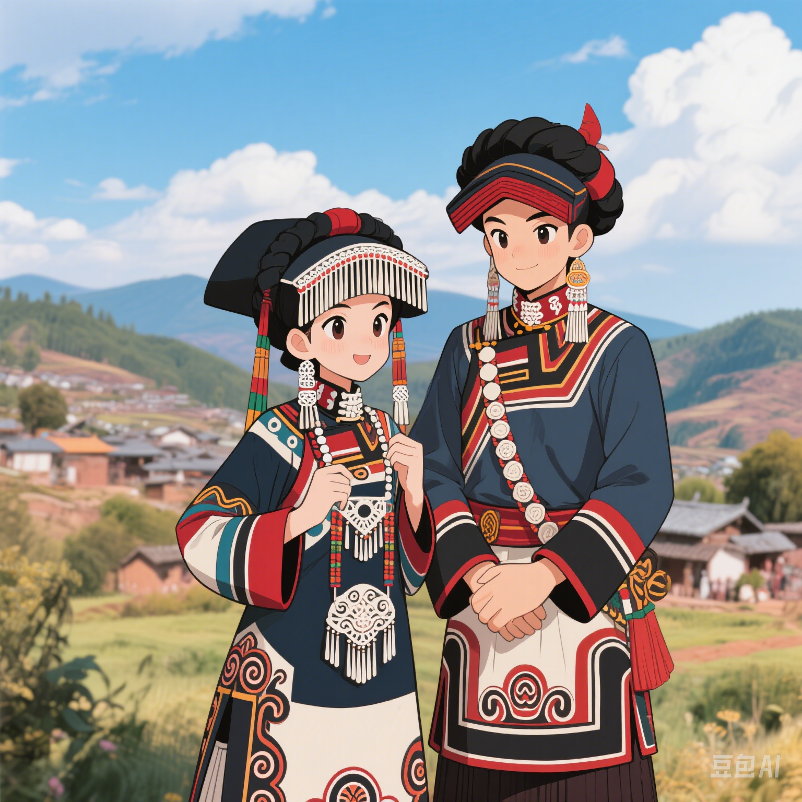

民族概况

历史渊源
云南省楚雄彝族历史悠久，是古滇国和南诏文化的重要传承者。彝族先民属氐羌族群，汉代迁入云南，唐代形成强大部落， 明清时期融入多元文化。楚雄作为彝族聚居区，至今保留着十月太阳历、火把节等独特传统，被誉为"中国彝族文化大观园"。

人口分布
彝族是中国第六大少数民族，主要分布在云南、四川、贵州、广西四省区。云南楚雄彝族自治州和红河哈尼族彝族自治州是最大聚居区， 四川凉山彝族自治州则是全国最大的彝族聚居区。

语言文字
楚雄彝族自治州是中国彝族文化核心区，彝族人口约占全州三分之一。这里完整保留着彝族十月太阳历、火把节等非物质文化遗产， 是研究彝族历史、语言、文字的重要地区。